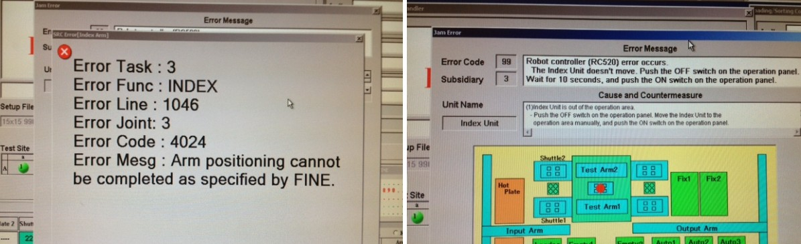
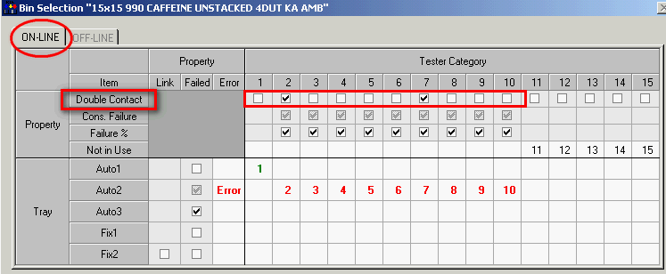

Service History
Subject: NS-8080HW Direct High Contact Force with Online give Error 4024 & RC520 Error 99 sub 3
Handler Model: NS-8080HW (S/N: 182025)
Controller: RC520 (S/N: 03-2061)
Date:
Symptom
Qualcomm(S) NS-8080HW (S/N: 182025) setup file 15x15 990 CAFFEINE UNSTACKED 4DUT KA AMB Direct HFC+Online+Dummy Contact give Errors:- 4024 Arm positioning cannot be completed as specified by Fine for Index- Robot controller C520 Error 99 sub 3.
Action
Handler received bin result but Index Arm 1 did not move up from socket then
RC520 controller error(Error 99, sub 3) followed by Error 4024 Arm positioning cannot be completed as specified by FINE.
Online Contact test at Direct HCF with devices, no error.
-Online test time about 1 sec
Offline dummy test time have set to 2 sec and 12 sec for testing. Dummy test time has no effect on the errors.
-Use another 2 DUT setup file also same error 4204 and RC520 error
-Reload IFUNT100B17.Hex, same error 4204 and RC520 error
-Reload IFUNT100B16.Hex, same error 4204 and RC520 error
-Reload IFUNT100B17.Hex, same error 4204 and RC520 error
-Even Enable only Index Arm 2 also same error.
-Unistall SPEL, delete PSPELWORK folder. SYSTEM & Pos restored, same errors.
-Re-installed HMI T11.52-KSS. same errors.
-Imported setup file CSP-0505 from 1.2 year ago backup in thumbdrive.
-Using imported setup file CSP-0505 and create new setup file Test 15x15 990 CAFFIENE.
-Re key in correct tray matrix, number of sites, Contact parameters and etc to Test 15x15 990 CAFFIENE
- Using setup file Test 15x15 990 CAFFIENE, set ONLINE, Direct HCF mode, running without error.
- tested afew times also no error for ONLINE + Direct HCF
- Customer also use my backup setup file 976 NSP 14x14 AMB with Online+ Direct HCF mode, no error

Cause
12 Mar 2013, EPSON informed that Online Bin for enable Double Contact for High Contact Force has bug.
New HMI T13.70-KSS release to correct the bug of:
1) High Contact Force + Online + Dummy Contact error
2) Empty Tray Arm crash into Output Arm (from ASE).